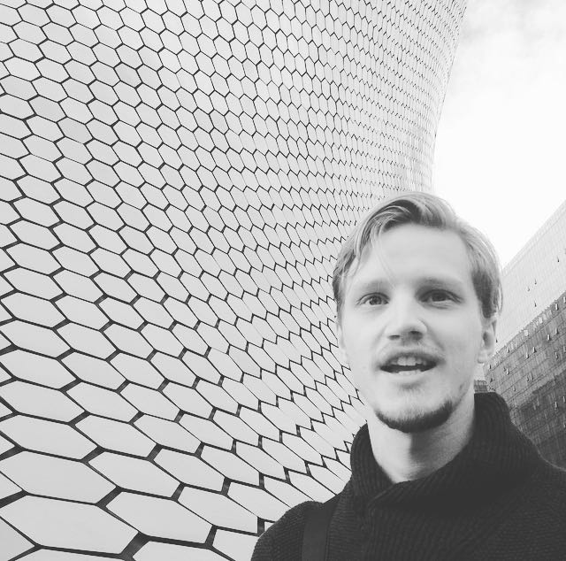
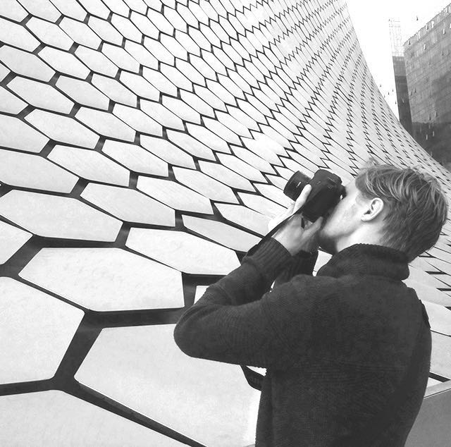

My father has taken pictures for as long as I can remember. I recently found his old camera in a closet, along with two lenses, sitting in a cylindrical leather carrying case. It was a Canon AE-1. With it, he would spend his summers sailing around the Stockholm Archipelago, photographing whatever he found to be interesting. Now, he has a library of thousands of islands, ships and sunsets. That was a kind of joy I grew up with. And while photography has changed, the joy has not.
I’ve worked as a graphic designer. I have an interest in writing too. Those things are going on on and off. But photography is something that always happens. The camera is always out when I travel. In conjunction, these things are the things that I live for.
A picture is unique when it contains a situation that has never been seen in such a way before. The best instant to press the shutter is when the moment in the frame is one that’s fleeting.
My name is Robert Eriksson. I’m from Stockholm, Sweden.
I can be reached at: info@roer.design
